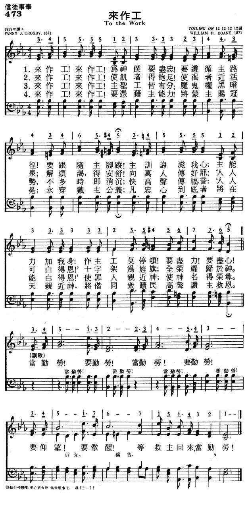

|
|
|
|
1 To the work! to the work! we are servants of God, Refrain: 2 To the work! to the work! let the hungry be fed; 3 To the work! to the work! there is labor for all; 4 To the work! to the work! in the strength of the Lord, |
473来作工
1.来作工！来作工！为神仆要尽忠！
要遵循主路径！要跟随主脚踪！ 主训诲滋我心；主能力加我身： 作主工莫停顿！要尽力！要尽力！ 当勤劳！要勤劳！当勤劳！要勤劳！ 要仰望！要警醒！等救主回来，当勤劳！ 2.来作工！来作工！使饥者得饱足！ 使渴者近活泉；解烦渴，得安舒！ 向万人传好讯：‘人人可白得恩！’ 十字架为旌旗；全荣耀归于神。 3.来作工！来作工！主圣工皆有分； 魔鬼权黑暗势，不多时即消沉； 快高声传福音：‘人人能白得恩！’ 使罪人亲近神；使神名得荣尊。 4.来作工！来作工！要凭借主能力！ 将蒙主赐冠冕；永穿戴主公义； 凡忠心到底者将在天亲近神， 将偕同众赎民高声赞主救恩。 |
|
https://www.mred365.cn/szxg/7476.html
 https://hymnary.org/hymn/NNBH1977/page/386
|
|
|
|
|

-

https://youtu.be/S3FpM9l_m_E -
To The Work - Martha Reed Garvin https://www.youtube.com/watch?v=mWmdVjv8FH8
| Text: | To the Work! |
| Author: | Fanny J. Crosby |
| Tune: | [To the work! to the work!] |
| Composer: | William H. Doane |

Tune Information
| Title: | [To the work! to the work] |
| Composer: | W. Howard Doane |
| Meter: | 6.6.6.6 with refrain |
| Incipit: | 34555 51233 33234 |
| Key: | F Major |
| Copyright: | Public Domain |

來作工 To the Work
來作工，來作工！為神僕要盡忠！
要遵循主路徑！要跟縱主腳蹤！
主訓誨滋我心；主能力加我心；
作主工莫停頓！要盡力！要盡心！
來作工，來作工！使飢者得飽足，
使渴者近活泉；解煩渴，得安舒！
向萬人傳好訊：人人可白得恩！
十字架為旌旗；全榮耀歸於神。
（副歌）
當勤勞！要勤勞！當勤勞！要勤勞！
要仰望！要儆醒！等救主回來，當勤勞！
神的工作不會因人亡而中止，前人離去，後人興起。 我們不要躊躇耽延，而要接棒勤快工作。
這首詩的作者是芬妮克羅斯比（Fanny J. Crosby，見二月二日）。杜恩譜曲。
杜恩（William Howard Doane, 1832-1915）是美國的一位工業家、發明家和慈善家。他在十四歲時就任學校詩班的指揮。
早年與父親在康州及芝加哥經營紡織廠，嗣後，與人合作，製造鋸木機器，在當地是頗具聲望的社會與宗教領袖。
他是一位虔誠的浸信會會友，曾任主日學主任達二十五年之久。 他捐大筆金錢與慈善事業，並捐建浸信會大學的圖書館，奉獻管風琴給青年會會堂。
他自已家中也設有圖書室及音樂室。
杜恩在工作之暇，以作曲及編印詩歌集為樂，一生作曲約2200首。 他經常為芬妮克羅斯比（Fanny J. Crosby）的聖詩譜曲，他們合作的著名聖詩有「莫把我棄掉」（Pass
Me Not）、「我乃屬耶穌」（I Am Thine, O Lord）、「榮耀歸於真神」、（To
God Be the Glory）、十字架（Near the Cross）等等。
十字架
Near the Cross
求主使我靠十架，在彼有生命水；
寶血由十架流下，白白賜人洗罪。
我來到主十架前，蒙救主的愛憐；
祂賜我聖靈亮光，照亮我的心田。
求主使我依十架，思念昔日情景：
常在十架蔭庇下，緊緊跟主前行。
儆醒等候十架前，盼望信心加增；
直到走完世路程，天家永享安穩。
（副歌）
十字架，十字架，永是我的榮耀，
我眾罪都洗清潔，唯靠耶穌寶血。
（可在聖樂分享的『閩南聖詩 第四集 』CD上（第五首）聆聽此歌）
中英文聖詩集參考
英文歌名 To
the Work
頌主新歌 473
頌主新歌(中英雙語) 479
生命聖詩 473
聖徒詩集 638
讚美 452
英文歌名 Near the Cross
教會聖詩 198
頌主新歌 136
生命 367
讚美詩 216